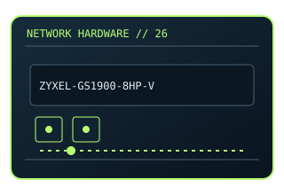

[ MODEL-SPECIFIC NETWORK HARDWARE ]
Zyxel GS1900-8HP v3 8-Port Gigabit Smart Managed PoE Switch
Eight-port smart-managed PoE+ switch with two SFP uplinks. This entry uses the labeled manufacturer model identifier and cites primary product/support documentation.

MODEL IDENTIFICATION: Match the complete model/part number and hardware revision on the item label to manufacturer documentation. Do not apply this entry to near-name variants.
Exact specifications and compatibility
| Cataloged model | Zyxel GS1900-8HP v3 8-Port Gigabit Smart Managed PoE Switch |
|---|---|
| Dedicated subcategory | Managed switches |
| Bus / host interface | Standalone switch; desktop/wall/rack installation options depend on package. |
| Ports / physical interfaces | 8 × Gigabit RJ-45 PoE+ access ports; 2 × SFP uplinks; per-version PoE budget is hardware-specific. |
| PHY, radio or protocol | IEEE 802.3 Ethernet switching; web-managed VLAN/QoS and PoE management features. |
| PoE | PoE+ output on 8 access ports; total/per-port power budget is revision-specific and must be taken from the cited Zyxel datasheet. |
| Link-rate vs throughput | 1Gb/s per copper port; aggregate switch capacity and user payload differ. Link rates are nominal negotiated/PHY specifications, not measured application throughput; no measured specimen result is claimed. |
| Firmware / driver support | Zyxel firmware downloads and release notes are hardware-revision specific. |
| Compatibility checks | Verify printed v3 revision, total PoE budget, input supply and supported SFP modules. |
Model-specific notes
PoE output is constrained by the model power budget and per-port limits.
Primary manufacturer sources
- Zyxel GS1900-8HP v3 datasheet and supportManufacturer product specification or documentation for the exact model/family.
- Manufacturer support and compatibility resourcesFirmware, driver, compatibility, revision or support details; applicability may depend on the exact hardware revision and region.
Vendor maximum rates are not test results. Confirm regional variants, hardware revision and current support status with the manufacturer.